Engle and Granger (1987) note that a linear combination of two or more I(1) series may be stationary, or I(0), in which case we say the series are cointegrated. Such a linear combination defines a
cointegrating equation with
cointegrating vector of weights characterizing the long-run relationship between the variables.
It is well-known that if the series are cointegrated, ordinary least squares estimation (static OLS) of the cointegrating vector  in Equation (28.1)
in Equation (28.1) is consistent, converging at a faster rate than is standard (Hamilton 1994). One important shortcoming of static OLS (SOLS) is that the estimates have an asymptotic distribution that is
generally non-Gaussian, exhibit asymptotic bias, asymmetry, and are a function of non-scalar nuisance parameters. Since conventional testing procedures are not valid unless modified substantially, SOLS is generally not recommended if one wishes to conduct inference on the cointegrating vector.


 dimensional time series vector process 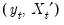, with cointegrating equation
dimensional time series vector process 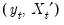, with cointegrating equation stochastic regressors
stochastic regressors  are governed by the system of equations:
are governed by the system of equations: regressors enter into both the cointegrating equation and the regressors equations, while the 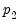-vector of 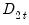 are deterministic trend regressors which are included in the regressors equations but excluded from the cointegrating equation (if a non-trending regressor such as the constant is present, it is assumed to be an element of 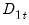 so it is not in ).
regressors enter into both the cointegrating equation and the regressors equations, while the 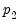-vector of 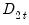 are deterministic trend regressors which are included in the regressors equations but excluded from the cointegrating equation (if a non-trending regressor such as the constant is present, it is assumed to be an element of 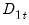 so it is not in ).  , one-sided long-run covariance matrix
, one-sided long-run covariance matrix  , and covariance matrix
, and covariance matrix  , each of which we partition conformably with
, each of which we partition conformably with 
 long-run covariance matrix
long-run covariance matrix  with non-singular sub-matrix 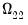. Taken together, the assumptions imply that the elements of
with non-singular sub-matrix 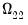. Taken together, the assumptions imply that the elements of  and
and  are I(1) and cointegrated but exclude both cointegration amongst the elements of
are I(1) and cointegrated but exclude both cointegration amongst the elements of  and multicointegration. Discussions of additional and in some cases alternate assumptions for this specification are provided by Phillips and Hansen (1990), Hansen (1992b), and Park (1992).
and multicointegration. Discussions of additional and in some cases alternate assumptions for this specification are provided by Phillips and Hansen (1990), Hansen (1992b), and Park (1992). are strictly exogenous regressors so that 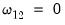 and 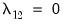, the bias, asymmetry, and dependence on non-scalar nuisance parameters vanish, and the SOLS estimator has a fully efficient asymptotic Gaussian mixture distribution which permits standard Wald testing using conventional limiting
are strictly exogenous regressors so that 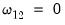 and 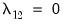, the bias, asymmetry, and dependence on non-scalar nuisance parameters vanish, and the SOLS estimator has a fully efficient asymptotic Gaussian mixture distribution which permits standard Wald testing using conventional limiting  -distributions.
-distributions. is no less than the number of stochastic regressors
is no less than the number of stochastic regressors  . Let 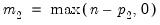 represent the number of cointegrating regressors less the number of deterministic trend regressors excluded from the cointegrating equation. Then, roughly speaking, when 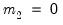, the deterministic trends in the regressors asymptotically dominate the stochastic trend components in the cointegrating equation.
. Let 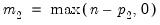 represent the number of cointegrating regressors less the number of deterministic trend regressors excluded from the cointegrating equation. Then, roughly speaking, when 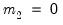, the deterministic trends in the regressors asymptotically dominate the stochastic trend components in the cointegrating equation. case.
case.